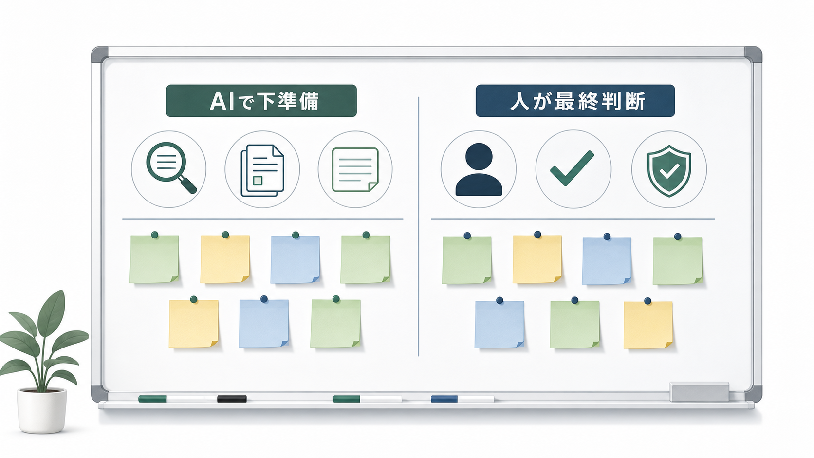
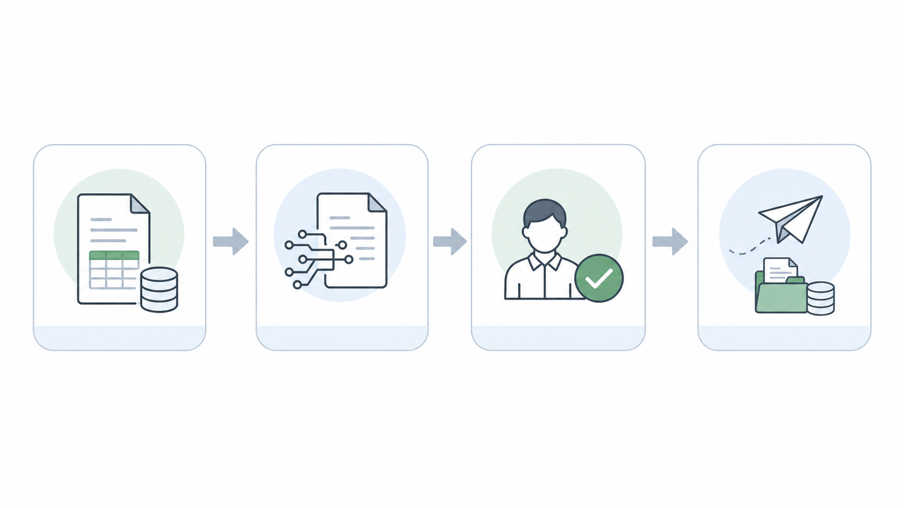

営業AIを検討するとき、最初に出てくるのは「便利そう」「時短になりそう」という話です。もちろんそれも事実ですが、導入相談を聞いていると、つまずきポイントはだいたい2つに集約されます。「どこで使えばいいか分からず、現場が触らない」か、「勢いで外に出してはいけないものまで任せて、事故りそうになる」かです。
私はここを、機能比較の前に先に決めておくのが一番コスパがいいと思っています。この記事では、営業AIに「使わせる業務（下準備）」と「任せない業務（最終判断）」の線引きを、現場で使える形に落とします。
結論：AIに任せるのは「下準備」まで。外に出す最終判断は人が持つ
営業AIは、うまくハマると前工程が一気に速くなります。一方で、生成AIはもっともらしい誤情報を出しうる（いわゆる hallucinations / fabrications）という性質があり、対外文面の「事実」や「約束」を丸投げするのは危ないです。
参考: NISTのGenerative AI Profile（NIST AI 600-1）でも、生成AIの特性とリスクが整理されています。
なので、私はまずこう分けます。
- 使わせる: 情報収集 / 整理 / たたき台 / 要約 / 文章の整形（下準備）
- 任せない: 事実確定 / 条件提示 / 送信 / コンプラ判断 / 顧客との合意（最終責任）

「線引きがない」と現場で起きる3つの事故
1) 何に使うか分からず、結局“触られない”
現場は忙しいので、「これ結局どの業務で使うの？」が曖昧だと、ログインすらされません。導入側は「使えば便利」のつもりでも、現場は「新しい作業が増える」と感じます。
2) AIの出力を信じすぎて、事実確認が抜ける
生成AIは文章が自然なので、ぱっと見で「正しそう」に見えます。出典のない断定、社名の取り違え、提案条件の混入が起きると、信頼を落とすのは一瞬です。
3) 顧客情報や社内情報が、思わぬ形で外に出る
LLMを業務に組み込むと、prompt injection や機密情報露出など、LLM特有のリスクも現実になります。AIを使うかどうかではなく、「どこまでAIに入力してよいか」「どこで人が止めるか」を決める話です。
参考: OWASP Top 10 for LLM Applications では、LLMアプリ特有の代表リスクが整理されています。
まずはここから：営業AIに「使わせる業務」（おすすめ）
私が現場で「まず効く」と感じるのは、だいたいこの辺です。
- 企業・業界の一次情報の収集 → 要点整理（出典URLを残す）
- 商談前の仮説づくりのたたき台（想定課題、聞くべき質問の候補）
- 過去商談メモ/議事録の要約と論点抽出（次回アジェンダの素材づくり）
- 提案資料の「構成案」だけ作る（数字や事実は人が入れる）
- メール文面の「下書き」（敬語・言い回し・読みやすさの整形）
ポイントは、AIが出したものをそのまま使うのではなく、「人が判断しやすい形に整える」ことです。AIを答えを出す装置として扱うと荒れますが、前さばきとして使うと強いです。
次に決める：営業AIに「任せない業務」（ここは人が責任を持つ）
逆に、ここは最初から「人がやる」と決めた方が早いです。
- 顧客に送る前提での最終送信（メール送信、フォーム送信、SNS投稿）
- 金額・納期・条件など、合意形成に関わる文言の確定
- 法務・コンプラ判断（契約、個人情報、機密、競合比較の表現）
- 顧客の事実認定（組織体制、意思決定者、過去の発言の断定）
- 「この会社に当てるべきか」の最終判断（ターゲット選定の最終責任）
ここをAIに任せると、運用のどこかで「誰が責任を持つの？」が破綻します。導入後に揉めるのはだいたいここなので、先に線引きしておくのが大事です。
導入前チェックリスト：最低限「9個」だけ決める
- AIに入れて良い情報 / ダメな情報（顧客名、個人情報、社内機密、未公開情報など）
- AIの出力を使って良い範囲（社内下書きまで / 対外文面も可、など）
- 最終判断者（責任者）は誰か（職種/役割で明確化）
- 人のレビュー手順（事実 → トーン → NG表現 → 送信、の順など）
- 出典URLがない断定の扱い（原則採用しない、など）
- テンプレの保守担当（プロンプト、雛形、禁止表現の更新）
- 例外対応（急ぎ案件/クレーム対応など、AIを使わない条件を決める）
- 権限設計（必要以上の自動実行をさせない。excessive agency を避ける）
- 改善の回し方（週次で「どこが詰まったか」だけ振り返る）
運用の型：おすすめは「4ステップ固定」

- 入力（材料を揃える）
- AI（下書きを作る）
- 人（事実確認＋最終判断）
- 送信/記録（外に出す・残す）
運用が固まると、現場は「AIを使うときの作法」を覚えやすくなります。逆に、運用が人の気合に依存すると、担当者が変わった瞬間に止まります。
まとめ：導入の成否は、機能より「線引き」で決まる
営業AIは、導入するとできることが増えるぶん、迷いも増えます。だからこそ最初に「使わせる業務」と「任せない業務」を決めるのが一番効きます。
もし「新規開拓の前工程（ターゲット選定、企業調査、提案文のたたき台、アプローチの準備）をAIで仕組み化したい」という状況なら、ValorizeAI のセールスAIのページも参考にしてみてください。